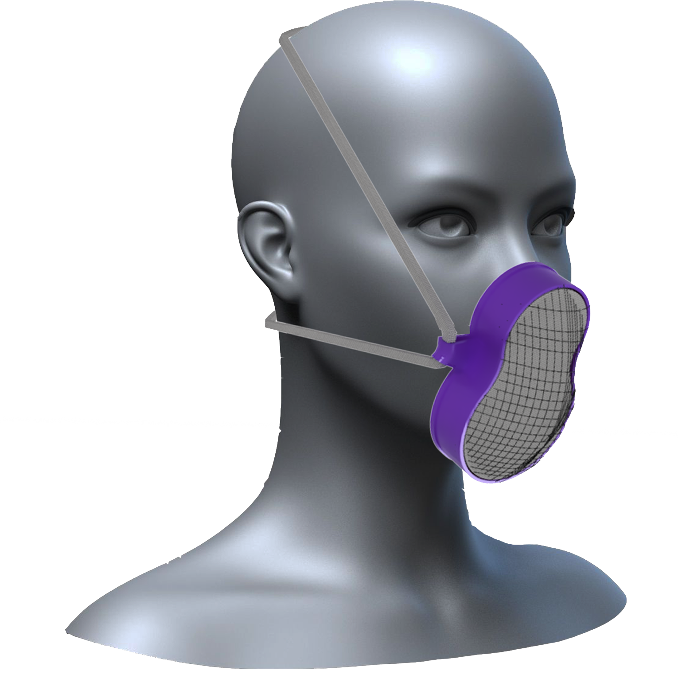
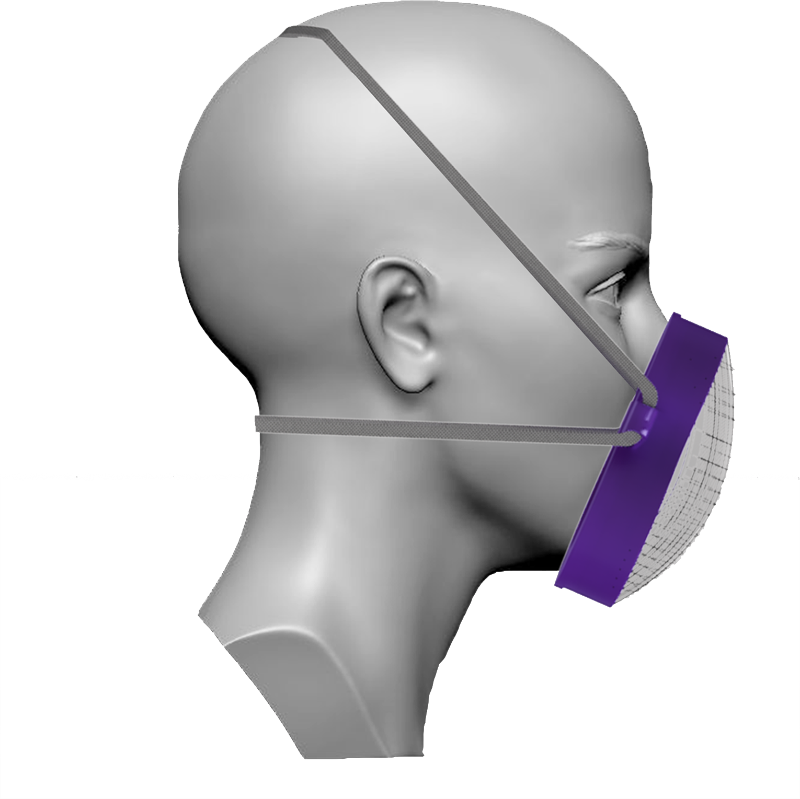
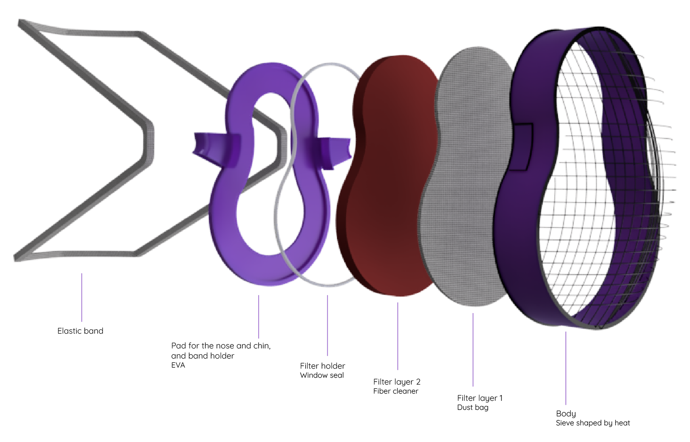

Vivor is designed during the quarantine of the pandemic process.
It is a solution for extreme pandemic situation; emerged by a question of what can be done without any access to existing masks.
The aim is to be prepared at home by people themselves.
Mask can be used over and over again;
Filters can be renewed and body of the mask can be washed after every usage.
EVA is placed to the inner side; it takes shape of the touch points on the face to avoids gaps.
